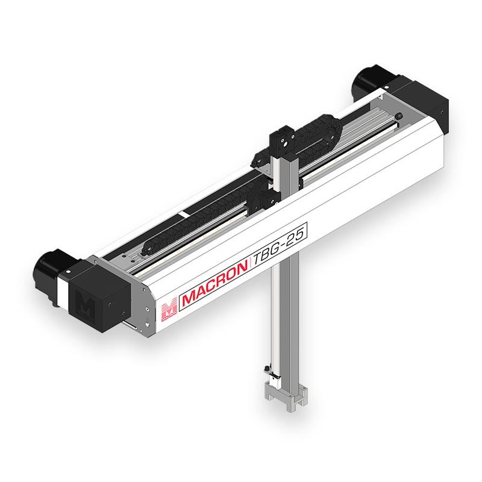
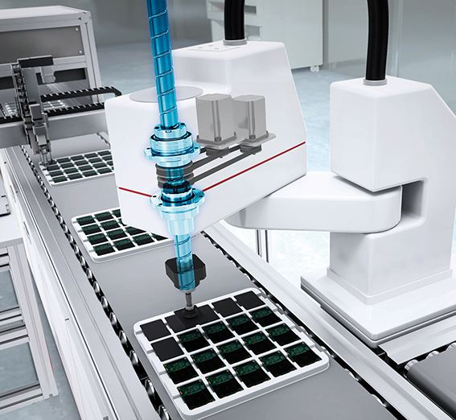
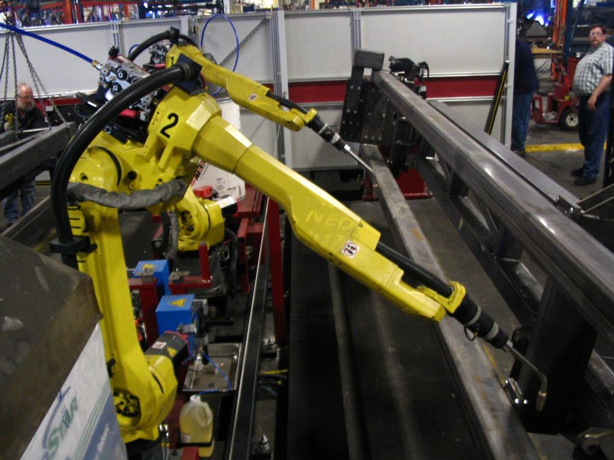
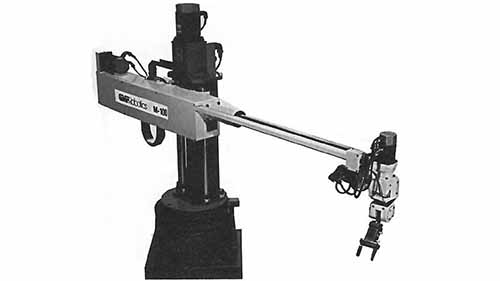
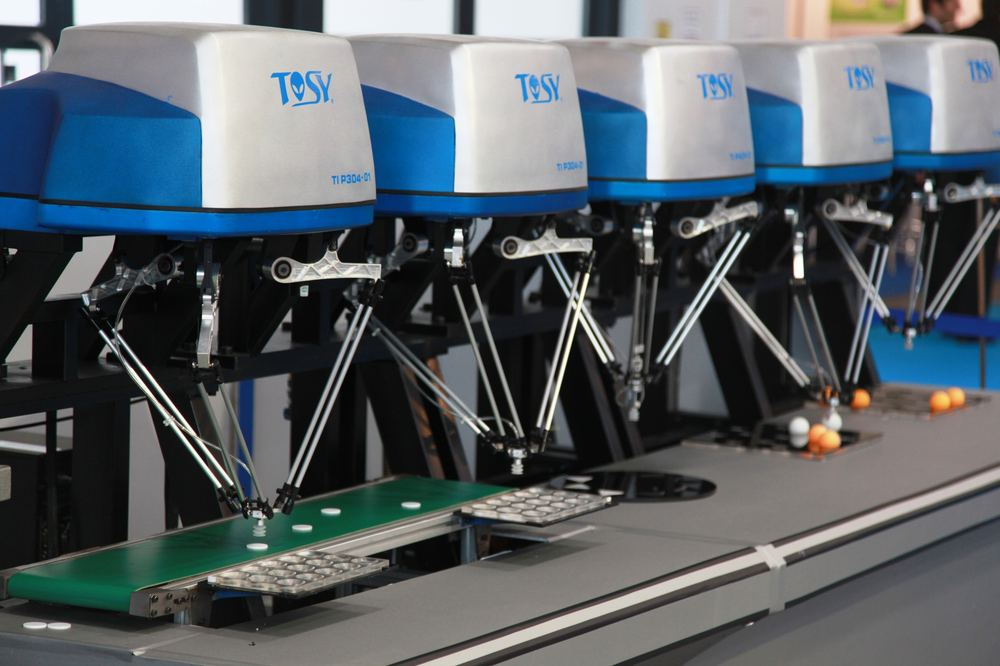
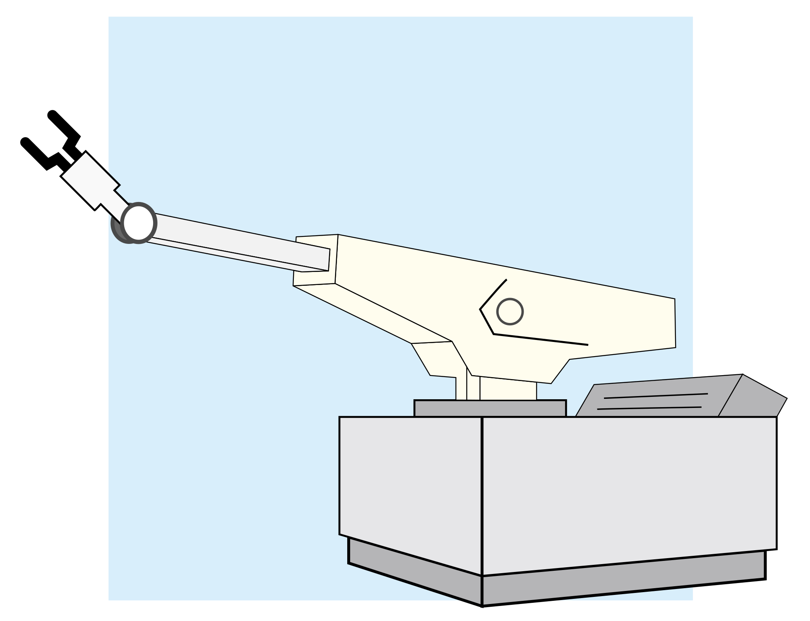
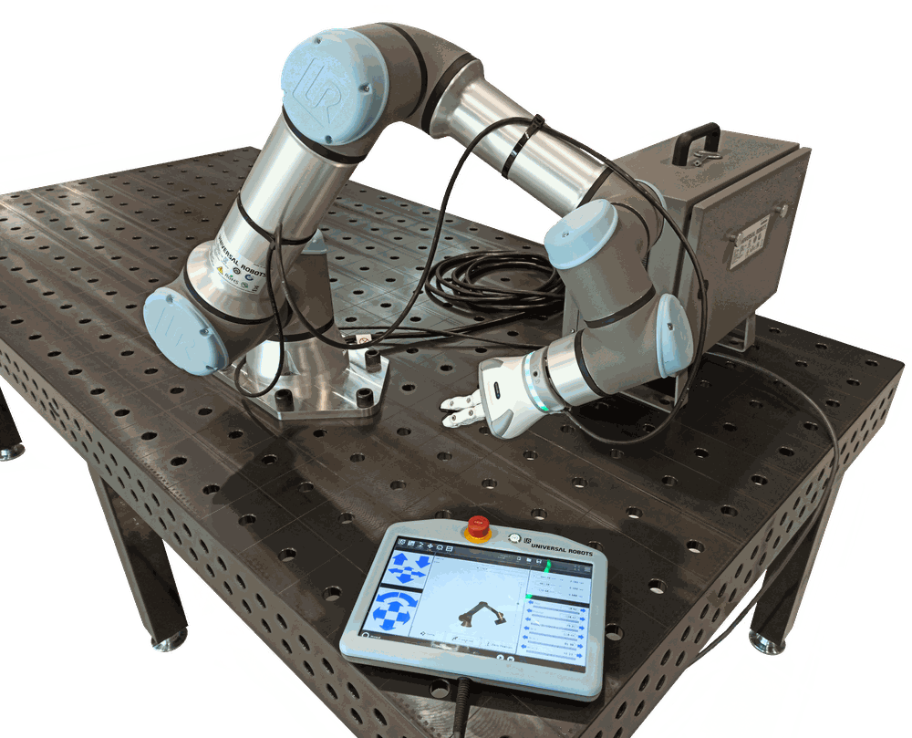

Catálogo de Robôs Industriais
7 configurações cinemáticas usadas na Indústria 4.0, com conceito, funcionamento, aplicações e modelos comerciais.

Robô Cartesiano
Conceito: robô cujos três eixos de movimento (X, Y, Z) são lineares e perpendiculares entre si, seguindo o sistema de coordenadas cartesianas — por isso também é chamado de robô "gantry" (pórtico).
Princípio de funcionamento: movimenta-se apenas por juntas prismáticas (deslizantes), sem nenhuma junta rotativa. Cada eixo é independente e acionado por motores de passo ou servomotores ligados a fusos de esferas, correias dentadas ou guias lineares, o que torna sua trajetória sempre em linha reta.
Características Técnicas
- Estrutura rígida tipo pórtico, sem juntas rotativas
- Repetibilidade muito alta: ±0,01 a 0,1 mm
- Área de trabalho em formato de paralelepípedo
- Programação simples (trajetórias lineares)
- Boa capacidade de carga em relação ao porte
Aplicações Industriais
- Pick and place de componentes
- Corte e usinagem CNC
- Impressão 3D industrial
- Paletização de caixas
- Inspeção dimensional automatizada
Integração com Automação e IoT
Encoders em cada eixo e sensores de fim de curso reportam a posição em tempo real para CLPs conectados em redes Ethernet Industrial ou Profinet, permitindo monitoramento remoto do ciclo de produção, detecção de desvios de posição e integração com sistemas MES.
Modelos Comerciais
Festo — EXCM Gantry
Fabricante: Festo. Sistema gantry compacto de baixo peso, ideal para pick and place em alta velocidade.
Yamaha — YK-XC Series
Fabricante: Yamaha Motor. Robô cartesiano modular usado em montagem eletrônica de precisão.
IAI Corporation — TT Series
Fabricante: IAI Corporation. Atuadores lineares combináveis em 2 ou 3 eixos cartesianos.

Robô SCARA
Conceito: SCARA significa Selective Compliant Assembly Robot Arm. Possui dois eixos rotativos paralelos que se movem no plano horizontal e um eixo linear vertical, sendo rígido no eixo Z e "complacente" (flexível) no plano XY.
Princípio de funcionamento: dois elos giram sobre eixos verticais paralelos (como um braço duplo), posicionando o punho em qualquer ponto do plano horizontal; um terceiro eixo linear desce ou sobe o efetuador, e um quarto eixo rotaciona o pulso.
Características Técnicas
- Alta velocidade em ciclos curtos e repetitivos
- Repetibilidade de ±0,01 a 0,05 mm
- Rígido no eixo vertical, flexível no plano horizontal
- Payload típico entre 1 e 20 kg
- Alcance entre 300 e 1200 mm
Aplicações Industriais
- Montagem eletrônica e inserção de componentes
- Manuseio de placas de circuito impresso (PCB)
- Parafusamento automatizado
- Embalagem de pequenos produtos
- Testes funcionais de qualidade
Integração com Automação e IoT
Controladores SCARA modernos publicam dados de cada ciclo (tempo, posição, torque) via OPC UA ou MQTT para sistemas MES, permitindo rastreabilidade individual de cada peça montada e detecção antecipada de desgaste mecânico.
Modelos Comerciais
Epson — G6 Series
Fabricante: Seiko Epson. SCARA de alta velocidade com alcance de até 650 mm, usado em montagem eletrônica.
FANUC — SR-6iA
Fabricante: FANUC. SCARA compacto voltado para operações de pick and place em linhas de alta produção.
Yamaha — YK500XG
Fabricante: Yamaha Motor. SCARA de precisão para montagem e dispensação de adesivos.

Robô Articulado
Conceito: robô cujas juntas são todas rotativas, imitando a estrutura de um braço humano. É o tipo mais comum na indústria, geralmente com 4 a 7 eixos de liberdade.
Princípio de funcionamento: cada junta rotativa é acionada por um servomotor e conectada por elos rígidos; o controlador calcula a cinemática inversa para posicionar o efetuador na coordenada e orientação desejadas.
Características Técnicas
- Grande flexibilidade e alcance espacial (6 graus de liberdade)
- Payload de poucos kg até mais de 1 tonelada
- Repetibilidade de ±0,02 a 0,1 mm
- Alta versatilidade de orientação do efetuador
- Complexidade maior de programação (cinemática inversa)
Aplicações Industriais
- Solda a arco e a ponto
- Pintura industrial
- Paletização de cargas pesadas
- Manuseio de materiais
- Usinagem e polimento robotizado
Integração com Automação e IoT
Sensores de torque e corrente nos servomotores alimentam sistemas de manutenção preditiva; protocolos como EtherCAT e Profinet integram o robô à célula de manufatura inteligente, permitindo ajuste dinâmico do processo com base em dados de outras estações da linha.
Modelos Comerciais
FANUC — M-20iA
Fabricante: FANUC. Robô articulado de 6 eixos, payload de 20 kg, usado em solda e manuseio.
ABB — IRB 6700
Fabricante: ABB. Robô de grande porte para fundição, solda e manuseio pesado (até 300 kg).
KUKA — KR 210
Fabricante: KUKA. Robô articulado versátil de médio/grande porte para diversas aplicações industriais.

Robô Cilíndrico
Conceito: robô com uma junta rotativa na base e duas juntas prismáticas (lineares), que definem um volume de trabalho em formato cilíndrico.
Princípio de funcionamento: a base gira em torno de um eixo vertical (coordenada θ), enquanto um eixo linear desloca o braço verticalmente (Z) e outro eixo linear o estende ou recolhe radialmente (r), posicionando o efetuador dentro do cilindro de trabalho.
Características Técnicas
- Estrutura compacta com boa relação alcance/espaço ocupado
- Repetibilidade moderada a alta (±0,1 mm)
- Bom acesso a espaços confinados e máquinas
- Menor número de configurações comerciais atuais
- Movimentos rápidos em linha reta e rotação simples
Aplicações Industriais
- Alimentação (tending) de máquinas-ferramenta
- Montagem em espaços reduzidos
- Manipulação de peças em linhas de fundição
- Pick and place em ambientes compactos
Integração com Automação e IoT
Encoders absolutos nos eixos e sensores de proximidade se comunicam via barramentos de campo (fieldbus) como DeviceNet ou Profibus, permitindo supervisão remota da posição do braço e integração com CLPs da célula de manufatura.
Modelos Comerciais
ST Robotics — R12 Cylindrical
Fabricante: ST Robotics. Robô cilíndrico compacto para laboratórios e linhas de pequeno porte.
Yaskawa — Motoman (linha cilíndrica)
Fabricante: Yaskawa. Histórico de robôs cilíndricos usados em tending de máquinas CNC.
Kawasaki — Linha cilíndrica legada
Fabricante: Kawasaki Robotics. Modelos cilíndricos utilizados historicamente em fundição.

Robô Delta
Conceito: robô paralelo composto por três braços leves que conectam uma base fixa (geralmente suspensa) a uma plataforma móvel, formando estruturas em paralelogramo.
Princípio de funcionamento: os motores ficam fixos na base, reduzindo a massa em movimento, e acionam os braços superiores; hastes paralelas transmitem o movimento à plataforma inferior, mantendo a orientação do efetuador constante.
Características Técnicas
- Altíssima velocidade (até centenas de ciclos por minuto)
- Baixa inércia — motores fixos na base
- Payload reduzido, tipicamente até 3–8 kg
- Área de trabalho em formato de domo
- Repetibilidade elevada (±0,01 a 0,1 mm)
Aplicações Industriais
- Picking de alta velocidade (alimentos e farmacêutica)
- Embalagem primária e secundária
- Triagem e classificação de peças pequenas
- Montagem leve de precisão
Integração com Automação e IoT
Sistemas de visão computacional integrados via GigE Vision ou EtherNet/IP guiam o robô em tempo real, com dados de posição sincronizados a esteiras transportadoras por meio de encoders conectados à rede industrial.
Modelos Comerciais
ABB — IRB 360 FlexPicker
Fabricante: ABB. Um dos robôs delta mais usados no picking de alta velocidade.
FANUC — M-3iA
Fabricante: FANUC. Robô delta compacto para embalagem e triagem de pequenos produtos.
Omron — Quattro
Fabricante: Omron (ex-Adept). Robô paralelo de 4 braços para ciclos ultrarrápidos.

Robô Polar (Esférico)
Conceito: robô cujo volume de trabalho é definido por coordenadas esféricas, combinando uma junta de rotação na base, uma junta de inclinação e uma junta linear de extensão radial.
Princípio de funcionamento: a base gira (θ), um braço se inclina verticalmente (φ) e um eixo prismático estende ou recolhe o braço radialmente (r), posicionando o efetuador dentro de um volume esférico. Foi a configuração do primeiro robô industrial da história, o Unimate (1961).
Características Técnicas
- Estrutura mecânica relativamente simples
- Grande alcance vertical e de rotação
- Menor rigidez e precisão que robôs articulados modernos
- Hoje pouco fabricado, majoritariamente substituído por articulados
Aplicações Industriais
- Fundição e manuseio de peças em prensas (uso histórico)
- Solda a ponto em linhas legadas
- Carregamento de máquinas
Integração com Automação e IoT
Em plantas que ainda operam robôs polares legados, sensores de posição são retrofitados com módulos de aquisição de dados (data loggers IoT), que convertem os sinais analógicos antigos em mensagens MQTT para monitoramento remoto e histórico de operação.
Modelos Comerciais (Historicamente Relevantes)
Unimation — Unimate
Fabricante: Unimation. O primeiro robô industrial do mundo, instalado na GM em 1961.
AMF — Versatran
Fabricante: American Machine and Foundry. Um dos primeiros robôs polares comerciais, contemporâneo do Unimate.
Kawasaki — Linha inicial licenciada
Fabricante: Kawasaki Robotics. Produziu robôs polares sob licença da tecnologia Unimate no Japão.

Robô Colaborativo (Cobot)
Conceito: robô projetado para operar em contato direto e seguro com humanos no mesmo espaço de trabalho, sem a necessidade de gaiolas de proteção.
Princípio de funcionamento: sensores de torque em cada junta detectam colisões e param o movimento instantaneamente; o software de segurança limita velocidade, força e energia cinética conforme normas como a ISO/TS 15066.
Características Técnicas
- Payload tipicamente entre 3 e 16 kg
- Baixa velocidade em modo colaborativo
- Programação simplificada (ensino por demonstração)
- Sensores de força/torque integrados nas juntas
- Certificação de segurança para operação sem cerca
Aplicações Industriais
- Montagem colaborativa lado a lado com operadores
- Inspeção de qualidade
- Paletização leve
- Auxílio em bancadas de trabalho compartilhadas
Integração com Automação e IoT
Cobots modernos possuem conectividade nativa (Ethernet/Wi-Fi) e APIs REST/MQTT, permitindo integração direta com sistemas MES/ERP e monitoramento de produtividade em painéis na nuvem, em tempo real.
Modelos Comerciais
Universal Robots — UR16e
Fabricante: Universal Robots. Payload de 16 kg, um dos cobots mais populares do mercado.
FANUC — CRX-10iA
Fabricante: FANUC. Cobot de fácil programação, indicado para pequenas e médias empresas.
ABB — YuMi
Fabricante: ABB. Cobot de dois braços, projetado especificamente para montagem colaborativa fina.